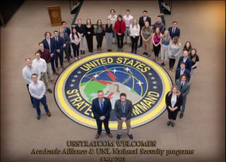

I graduated from the University of Nebraska-Lincoln in May 2023 with a bachelor's in Marketing and a minor in National Security Studies. I currently am utilizing my National Security and MIS background as a research and development assistant at the Nebraska Deterrence Lab. Over my academic career, I have had the opportunity to collaborate on projects with a number of government and defense institutions such as USSTRATCOM, NATO, and the FBI.
